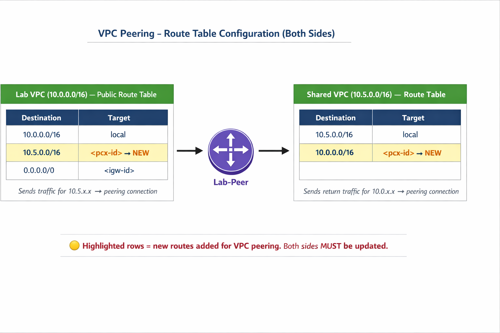

- VPC Peering: A private, direct network connection between two VPCs that keeps traffic within the AWS backbone — no internet required.
- Two-key acceptance model: The requester VPC sends a peering request; the accepter VPC must explicitly approve it before the connection becomes active.
- Route tables are mandatory: After accepting the peering, BOTH VPCs must update their route tables to direct traffic for the other VPC's CIDR range to the peering connection ID.
- Non-transitive: Peering is point-to-point. VPC A → VPC B → VPC C does NOT give A access to C. Direct peering is required for each pair.
- No overlapping CIDRs: Peered VPCs must have non-conflicting IP address ranges.
- ICMP / ping: A powerful network diagnostic tool based on echo request/reply; used to verify reachability between instances across a peering connection.
- Lab troubleshooting: The lab's database connectivity broke due to a MySQL version upgrade (8.0 → 8.4) that changed the default authentication method — a real-world example of version drift.
- Fix strategy: Pin the database engine version in CloudFormation templates; keep client and server software versions aligned.
- Security groups still apply: Peering enables routing — security groups control which specific traffic is actually allowed between instances.
- Transit Gateway for scale: When many VPCs need connectivity, Transit Gateway replaces the complex mesh of individual peering connections.
🔗 VPC Peering Connections
📅 February 26, 2026
Version: 1.0
Last Updated: February 26, 2026
Status: ✅ Current
📋 Table of Contents
- What is VPC Peering?
- Why Do We Need VPC Peering?
- How VPC Peering Works
- Task 1 – Creating a Peering Connection
- Task 2 – Configuring Route Tables
- Task 3 – Testing the Connection
- ICMP & the Ping Test
- Troubleshooting: When the Lab Breaks
- Database Version Mismatch Deep Dive
- Security & Best Practices
- Other Network Connection Options
🌐 What is VPC Peering?
Imagine you have two completely separate houses (VPCs) in the same neighbourhood (AWS). Each house has its own walls, its own locks, and its own private world inside. Normally, to send something from one house to the other, you'd have to go out onto the public street (the internet) — which is risky and slow.
A VPC Peering Connection is a private, direct network link between two VPCs that lets instances communicate as if they were in the same network, without ever touching the public internet.

Figure 1: Before peering (left) and after peering (right) – two isolated VPCs connected privately
💡 Key Insight: VPC Peering works completely within the
AWS backbone network. The traffic never leaves AWS infrastructure, which means lower latency, no
data transfer costs to the internet, and far better security.
🤔 Why Do We Need VPC Peering?
By default, every VPC is its own island. Traffic cannot flow between VPCs unless you explicitly connect them. This is actually a great security feature — you don't want random VPCs talking to your production database. But sometimes you do want controlled communication between VPCs. Common real-world reasons include:
- Centralized database: One VPC holds a shared MySQL/PostgreSQL database; multiple application VPCs need access.
- Cross-account sharing: Partner companies or internal teams in different AWS accounts need to exchange data securely.
- Cross-region architectures: Services in different AWS regions need a private link.
- Microservices isolation: Each service lives in its own VPC for blast-radius control, but they still need to communicate.
In the lab, we have exactly this scenario: a Lab VPC (containing a web application / inventory app in a public subnet) and a Shared VPC (containing a MySQL database in a completely private subnet with no internet gateway). The app needs to talk to the database — and peering is how we make that happen safely.
⚡ The Golden Rule: The
Shared VPC has NO internet gateway — the only way to reach its database is through the VPC
peering connection. This is intentional, and it's exactly the kind of secure architecture
you'd build for a production database tier.
⚙️ How VPC Peering Works
Think of a VPC peering connection like a two-key safe. Both people need to turn their keys before the safe opens. Neither side can force a connection — both must agree.
There are three phases to getting a peering connection working:
- Request: One VPC (the requester) sends a peering request to another VPC (the accepter).
- Accept: The target VPC owner must explicitly accept the request. This is a critical security step — you can't just start sending traffic to someone else's VPC.
- Route: Both VPCs must update their route tables to know how to forward traffic over the peering link. Without this step, even an accepted peering connection won't carry traffic.

Figure 2: Route tables after peering – each VPC learns the other's CIDR via the peering connection (pcx-id)
✅ Important: VPC peering
is non-transitive — if VPC A peers with VPC B, and VPC B peers with VPC C, VPC A cannot reach
VPC C through VPC B. Each pairing needs its own direct peering connection.
🔧 Task 1 – Creating a VPC Peering Connection
Before starting, let's confirm what we're working with in the lab environment:
- Lab VPC: CIDR
10.0.0.0/16— has a public subnet and an internet gateway. The Inventory web app runs here on an EC2 instance. - Shared VPC: CIDR
10.5.0.0/16— has only private subnets and NO internet gateway. The MySQL RDS database lives here, completely isolated.
Step-by-Step: Creating the Peering Connection
- In the AWS Console, navigate to VPC → Peering Connections.
- Click Create Peering Connection.
- Fill in:
- Name tag:
Lab-Peer - VPC (Requester): Lab VPC
- VPC (Accepter): Shared VPC
- Name tag:
- Click Create Peering Connection, then OK.
💡 Why do we need to "Accept"? Even when both VPCs are in the
same account, the acceptance step exists for safety. In real life, the accepter VPC may belong to a
different team, department, or even company. Acceptance means that owner consciously approves the
connection.
- Select the newly created Lab-Peer peering connection.
- Choose Actions → Accept Request → Yes, Accept.
- Close the pop-up.
✅ Status Check: After acceptance, the peering connection
status should change from Pending Acceptance to Active. If you misclick and the
pop-up disappears, go to Peering Connections and look for pending approvals.
⚡ Requester and Accepter — both sides must agree. The connection will show as
Pending Acceptance until the accepter approves.
🗺️ Task 2 – Configuring Route Tables
Accepting the peering connection only tells AWS the two VPCs want to talk. The route tables tell the network how to actually send packets there. Without updated routes, traffic will never find its way across.
Think of it like this: the peering connection builds the bridge, but the route table is the road sign that says "To Shared VPC → take the bridge."
Updating the Lab VPC Route Table
- Go to VPC → Route Tables.
- Select Lab Public Route Table (the one associated with Lab VPC).
- Click the Routes tab → Edit routes → Add route.
- Set:
- Destination:
10.5.0.0/16(Shared VPC's CIDR range) - Target: Peering Connection →
Lab-Peer
- Destination:
- Click Save routes → Close.
💡 What does this route say? "Any packet destined for an IP in
the
10.5.x.x range — send it through the Lab-Peer peering connection." Without this,
the Lab VPC would drop or misroute packets headed to the Shared VPC.Updating the Shared VPC Route Table
- Now select Shared-VPC Route Table.
- Click Edit routes → Add route.
- Set:
- Destination:
10.0.0.0/16(Lab VPC's CIDR range) - Target: Peering Connection →
Lab-Peer
- Destination:
- Click Save routes → Close.
✅ Why both directions? Route tables must be updated on BOTH sides of a VPC peering
connection — traffic needs a path to go AND a path to return. Forgetting one side is the
#1 mistake in this lab.
Figure 3: Both route tables must have entries pointing to the peering connection for two-way communication
❌ Common Mistake: Selecting the private route table
instead of the correct one. Always double-check the route table name before editing. The Lab VPC has
both a public and private route table — only the Lab Public Route Table needs the
peering route for this lab.
🧪 Task 3 – Testing the VPC Peering Connection
With the peering connection active and routes configured, it's time to verify everything works. The test involves configuring the Inventory web application to connect to the database across the peering link.
- Go to EC2 → Instances.
- Copy the IPv4 Public IP address of the App Server instance.
- Open that IP in a new browser tab — you should see the Inventory application with a "Please configure settings to connect to database" message.
- Click the Settings icon and fill in:
- Endpoint: The RDS database endpoint (find it under Details → AWS → Show → Endpoint)
- Database:
inventory - Username:
admin - Password:
lab-password
- Click Save.
✅ If the Inventory application loads data from the database, your VPC peering
connection is working perfectly! The fact that the app can reach the database proves the peering is
active — because the Shared VPC has no internet gateway, there's literally no other way that
connection could succeed.
📡 ICMP & the Ping Test (Bonus Lab Demonstration)
The professor added a clever bonus demonstration to prove the peering works even before the database
step. This used ICMP (Internet Control Message Protocol) — the protocol behind the
ping command.
What is ICMP / Ping?
ICMP is a network diagnostic protocol used for error reporting and reachability testing. The ping command sends ICMP echo requests to check if a host is alive and reachable.
The name "ping" actually comes from sonar — like a submarine sending out a sound pulse and listening for an echo back. You send a packet, and if the device is there and reachable, it pings back. It's also sometimes said to stand for "Packet Internet Groper" — you're groping in the dark looking for another device.
ICMP is also the foundation of traceroute, which lets you see every "hop" a packet takes through the network on its way to a destination — incredibly useful for diagnosing where traffic is getting stuck.
The Bonus Test Setup
Before creating the peering connection, the professor launched a second EC2 instance ("target") in the Shared VPC (the isolated one). This instance:
- Was placed in the Shared VPC's private subnet
- Had a security group rule allowing ICMP (IPv4) from any source
- Had only a private IP address — no public IP
Then, from the App Server (in Lab VPC), they tried to ping the target instance's private
IP. Before peering — silence. No response. After peering and adding routes — pings succeed, proving
the private connection works at the network level.
💡 Why allow ICMP from "any"? In a lab context, this is fine. In
production, you'd restrict ICMP to known IP ranges. But since we don't know exactly which IP might
be pinging (could come from various places within the VPC), setting the source to
0.0.0.0/0 makes the demo straightforward.🔍 Troubleshooting: When the Lab Breaks
This particular lab encountered a real-world failure between November 2025 and February 2026 — not because the lab instructions were wrong, but because AWS upgraded its default database engine version, breaking compatibility with the client software on the EC2 instance. This is an amazing real-world lesson in version management.
❌ The Symptom: The Inventory application shows a database
connection error even after the peering connection is correctly set up. The peering works — but the
application layer can't communicate with the database.
What Actually Went Wrong
The CloudFormation template that built the lab specified a MySQL database engine but did not pin the version. When AWS updated its default MySQL version from 8.0.x to 8.4.7, the lab broke because:
- Authentication method changed: MySQL 8.4.x defaults to
caching_sha2_password— a more secure but newer auth method. The EC2 client software is old and doesn't support it. - DNS reverse lookup requirement: MySQL 8.4.x by default requires a reverse DNS lookup on connecting clients. The EC2 app server's IP couldn't be resolved, so MySQL refused the connection entirely.
⚡ Pinning database engine versions in
CloudFormation templates is critical — failing to do so means AWS may automatically provision a
newer, incompatible version when the template runs.
How to Check What's Wrong
You can inspect the RDS logs in the AWS Console (RDS → Databases → your DB → Logs & Events). Look for messages about:
- "Could not be resolved" — this is the DNS reverse lookup failure
- Authentication-related errors about
caching_sha2_password
The Fix (If You Had Permissions)
The simplest fix would be adding two lines to the CloudFormation template under the database resource to specify an older, compatible engine version:
EngineVersion: "8.0"
AutoMinorVersionUpgrade: trueThis tells AWS to use MySQL 8.0.x (which is backward-compatible with the old EC2 client) and to auto-apply minor version upgrades within that family. This would give the lab compatibility for several more years.
🗄️ Database Version Mismatch – A Real-World Lesson
The lab failure illustrates something every cloud engineer encounters in the real world: version drift. Systems that worked perfectly for years suddenly break when one component gets upgraded.
📚 According to AWS documentation, MySQL 8.4 introduced
significant changes to default authentication and parameter groups compared to MySQL 8.0. Existing
applications relying on
mysql_native_password or older client libraries may need
updates before migrating to 8.4. 📚 Source: AWS RDS MySQL Version ManagementWhat Is a Parameter Group?
MySQL (and other RDS engines) use parameter groups to control hundreds of configuration settings —
think of it as a settings file for the database. The default parameter group for MySQL 8.4 includes
settings like authentication_policy set to require the new SHA2 method.
Changing the parameter group could allow old clients to connect again, but it requires database-level permissions in the lab environment.
Lessons for Production Environments
- Always pin versions: Specify the exact engine version in CloudFormation/Terraform so upgrades happen on your schedule, not AWS's.
- Test upgrades in staging first: Never upgrade production databases without testing compatibility in a staging environment.
- Upgrade client software together: When you upgrade a database engine, also update the client libraries on applications that connect to it.
- Plan maintenance windows: Database upgrades require downtime. Communicate to users in advance and choose low-traffic windows.
- Stay current (but not bleeding edge): Being 18 months behind on patches leaves you vulnerable. But jumping to the absolute latest immediately carries its own risks — let others discover the bugs first, then upgrade.
✅ The Balance: A practical approach is to stay 1-2 minor
versions behind the latest, apply security patches promptly, and do major version upgrades quarterly
with proper testing.
🛡️ Security & Best Practices for VPC Peering
CIDR Overlap Prevention
VPC peering requires non-overlapping CIDR blocks — two VPCs
cannot peer if their IP ranges conflict. In the lab, this is deliberately set up: Lab VPC
uses 10.0.0.0/16 and Shared VPC uses 10.5.0.0/16. Plan your IP addressing
carefully from the start.
Least-Privilege Security Groups
Even with a peering connection, Security Groups act as the final gatekeeper. Just because two VPCs can route to each other doesn't mean all instances can talk to all other instances. You still need to explicitly allow traffic in Security Groups:
- Allow only the specific port needed (e.g., port 3306 for MySQL)
- Set the source to the CIDR of the other VPC, not
0.0.0.0/0 - Use separate Security Groups for different tiers (web, app, database)
ACLs vs Security Groups
Network ACLs (NACLs) are stateless and operate at the subnet level. Security Groups are stateful and operate at the instance level. Security Groups are stateful — return traffic is automatically allowed without needing a separate outbound rule. NACLs require explicit rules for both directions.
For most peering setups, Security Group changes are sufficient. NACLs usually don't need changes unless they've been hardened with specific deny rules.
Monitoring Peering Traffic
Enable VPC Flow Logs to capture information about IP traffic going to/from network interfaces. This helps with troubleshooting and security auditing across peered VPCs.
🌐 Other AWS Network Connection Options
VPC Peering is one tool in the networking toolbox. Here's when to use what:
| Connection Type | Use Case | Internet Involved? |
|---|---|---|
| VPC Peering | Two VPCs that need private communication | No |
| AWS Transit Gateway | Hub-and-spoke for many VPCs (avoids peering mesh complexity) | No |
| AWS Direct Connect | On-premises data center to AWS (dedicated private line) | No |
| Site-to-Site VPN | On-premises to AWS over encrypted internet tunnel | Yes (encrypted) |
| Internet Gateway | VPC resources to/from the public internet | Yes |
| NAT Gateway | Private subnet resources initiating outbound internet connections | Yes (outbound only) |
💡 When to use Transit Gateway instead of Peering: If you have
more than 3-4 VPCs that need to communicate with each other, VPC peering creates a complex mesh
(N*(N-1)/2 connections). Transit Gateway acts as a central router — all VPCs connect to it and can
reach each other without individual peering connections.
📝 Overall Summary
📖 Glossary
🎤 Interview Questions
📚 Test your understanding with these questions.
Progress: 0/25 (0%)
📝 Multiple Choice Questions
📝 Test your knowledge with immediate feedback.
💼 Hands-On Projects
📋 Prerequisites
- ✅ AWS account (Free Tier)
- ✅ Knowledge: VPC basics, subnets, route tables, security groups, EC2 fundamentals
Project 1: Connect Two VPCs with Peering
🎯 Objective: Create two VPCs, launch EC2 instances in each, establish a peering connection, and verify cross-VPC communication with ping.
⏱️ Time: 30-45 minutes
💰 Cost: Free Tier (use t2.micro or t3.micro instances; terminate after)
Steps:
- Create VPC-A with CIDR
10.10.0.0/16and a public subnet10.10.0.0/24. - Create VPC-B with CIDR
10.20.0.0/16and a private subnet10.20.0.0/24. - Launch an EC2 instance in VPC-A's subnet (enable public IP; allow SSH and ICMP in security group).
- Launch an EC2 instance in VPC-B's subnet (no public IP; allow ICMP from
10.10.0.0/16in security group). - Create a VPC Peering Connection: Requester = VPC-A, Accepter = VPC-B. Accept the request.
- Update VPC-A's route table: add route
10.20.0.0/16 → pcx-id. - Update VPC-B's route table: add route
10.10.0.0/16 → pcx-id. - SSH into the VPC-A instance. Ping the private IP of the VPC-B instance:
ping 10.20.x.x. - Verify you get responses — peering confirmed! ✅
Cleanup:
- Terminate both EC2 instances
- Delete the VPC peering connection
- Delete both VPCs (this also removes subnets, route tables)
☑️ Learning Checklist
Progress: 0/15
🤔 Reflection Questions
1. Why does VPC peering require the accepter to explicitly approve the connection, even when both VPCs are in the same AWS account?
💡 Hint
Think about the real-world scenarios where VPCs belong to different teams, accounts, or organizations. The acceptance step ensures no one can unilaterally connect to your VPC.
2. What would happen if you updated only one side's route table — say, only Lab VPC's — after establishing a peering connection?
💡 Hint
Think about the return journey. Can a packet reach its destination if only the outbound route exists?
3. You have 5 VPCs that all need to communicate with each other. How many VPC peering connections would you need? Is there a better solution?
💡 Hint
Calculate: N*(N-1)/2 for full mesh peering. Then think about what AWS service acts as a central hub for multiple VPCs.
4. The lab's database stopped working because of a version mismatch. What steps would you follow in a production environment to safely upgrade a database engine?
💡 Hint
Think: staging environments, maintenance windows, client library updates, rollback plans, and how to communicate downtime to users.
5. Why doesn't the Shared VPC in this lab have an internet gateway? What security benefit does this provide?
💡 Hint
Think about database exposure. What would happen if someone on the internet could reach your MySQL database directly?
🔗 Links & References
📚 Official AWS Documentation
| Resource | Description |
|---|---|
| VPC Peering Documentation | Official AWS VPC Peering guide |
| VPC Peering Basics | Concepts, limitations, and routing |
| RDS MySQL Version Management | MySQL version compatibility and upgrades |
| Network ACLs | Stateless subnet-level access control |
🎓 Recommended Reading
| Resource | Description |
|---|---|
| AWS Transit Gateway | Hub-and-spoke alternative to complex peering meshes |
| VPC Flow Logs | Monitor and troubleshoot network traffic |
🔧 Additional Resources
| Resource | Description |
|---|---|
| VPC Pricing | VPC peering data transfer costs |
| Peering Configurations | Examples of valid peering setups |